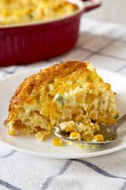

Corn Pudding
Ingredients

- 3/4 cup sugar
- 3 tbsp corn starch
- 1 can evaporated milk
- 1 can creamed corn
- butter
Instructions
- Blend sugar, corn starch, and eggs. Mix well.
- Add corn and milk
- Pour into casserole dish. Dot with butter.
- Bake at 350°F for 1 to 1.5 hours
[Back to Appetizers]
[Home]